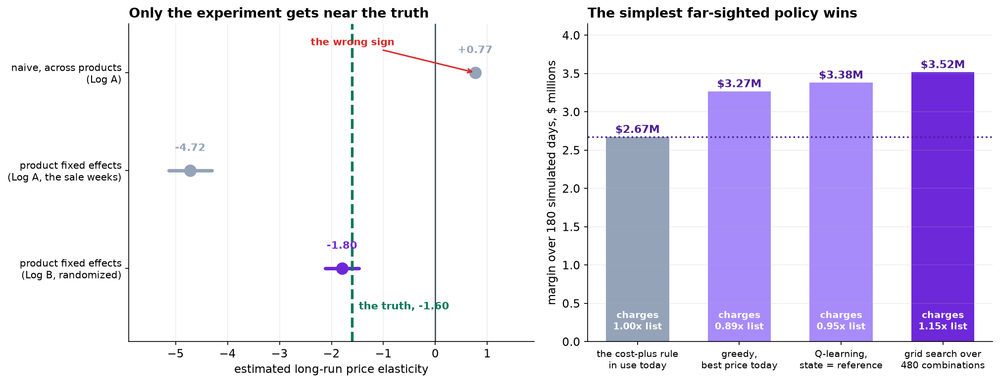
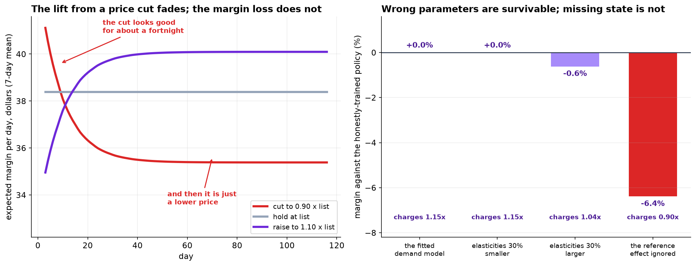

Identification, Offline Evaluation, and a Policy That Beat the Agent
The observational log gives +0.77; product fixed effects give -4.72; the randomized log gives -1.80 against a truth of -1.60. A tabular Q-learner then loses to a 480-point grid search.
1. Identification
Demand is modeled as a binomial GLM on sessions, with conversion depending on price. Three specifications on the same catalog:
| Specification | Estimate | 95% CI | Truth |
|---|---|---|---|
| log price, pooled across products (observational log) | +0.766 | [+0.756, +0.776] | -1.605 |
| log price vs list, product fixed effects (observational log) | -4.717 | [-5.13, -4.30] | -1.605 |
| log price vs list, product fixed effects (randomized log) | -1.796 | [-2.12, -1.47] | -1.605 |
The pooled estimate has the wrong sign because list price is a cost-plus markup and unit cost correlates with product quality (r = 0.72 between list price and the quality index). The cross-sectional comparison is between products.
The fixed-effects estimate on the observational log is biased by a factor of about three. After absorbing product means, the only remaining price variation is the sitewide sale in every fifth week, and that sale is accompanied by a promotional demand shifter. The price coefficient absorbs the entire promotional lift. This is the standard warning that a within estimator is only as good as the within variation, and that variation here is a single confounded event repeated four times.
The randomized estimate is mildly attenuated (-1.80 against -1.60) because the logs aggregate sessions to product-days and the session-level traffic-source variation is averaged away; averaging inside a logit shrinks coefficients toward zero. The short-run coefficient is -2.10 [-2.47, -1.74] against a truth of -2.46, attenuated for the same reason.
2. Experimental design requirements
Two properties of the experimental log are load-bearing and neither is automatic.
Assignment probabilities were logged. Inverse propensity weighting requires a known, non-zero propensity for every action the evaluated policy may take. Under the cost-plus rule only 2 of 7 candidate multipliers ever occurred, so five have propensity zero and no importance-weighted estimator is defined.
Prices were held for a full week. The reference price is an exponential moving average with weight 0.10, giving a half-life of about 6.6 days. Daily re-randomization drives the reference to the mean assigned multiplier for every product, making log(price/list) and log(price/reference) near-collinear. The standard deviation of reference/list is 0.024 in the observational log and 0.049 in the experiment; an earlier daily-randomization design produced coefficients whose confidence intervals overlapped each other and reversed their ordering relative to the truth.

3. Offline policy evaluation
For the candidate policy 'charge 1.10 x list on everything', the inverse propensity estimate of margin per session is 5.0799 with a 95 percent interval of [3.8625, 6.2973], against 5.0460 realized under the logging policy.
The effective sample size is 465 of 3,360 rows. A deterministic target policy retains only the logged rows where the assigned action coincides with the policy's action, so the variance penalty is structural rather than a consequence of this particular design. Doubly robust estimation would recover some of it by borrowing strength from a fitted outcome model, at the cost of depending on that model.
4. Simulator and policy comparison
The simulator applies the fitted demand model to 40 products over 180 days, updating each product's reference price as a 0.90/0.10 exponential average. All figures are means over eight seeds.
| Policy | Margin, 180 days | Against the rule | Mean multiplier |
|---|---|---|---|
| Cost-plus rule (incumbent) | $2,670,341 | — | 1.00 |
| Greedy, one-step margin optimum | $3,266,629 | +22.3% | 0.89 |
| Tabular Q-learning, best of four horizons | $3,380,090 | +26.6% | 0.95 |
| Direct search over 480 fixed-price combinations | $3,516,368 | +31.7% | 1.15 |
The greedy policy discounts because the short-run elasticity (-2.10) exceeds the long-run one (-1.80) and a one-step objective sees only the former. Holding a discount lets the reference decay to the new price over roughly three weeks, after which the lift is gone and the price reduction is not. A constant 0.90 multiplier is ahead of list price for about twelve days and behind it thereafter.

5. Why the reinforcement learner underperformed
| Discount factor | Effective horizon | Margin | Mean multiplier |
|---|---|---|---|
| 0.90 | 10 days | $3,380,090 | 0.951 |
| 0.97 | 33 days | $3,068,521 | 0.961 |
| 0.995 | 200 days | $3,045,479 | 0.962 |
| 0.999 | 1000 days | $2,960,571 | 0.917 |
| Reference / list | Learned multiplier |
|---|---|
| below 0.90 | 1.015 |
| 0.90 to 0.96 | 0.974 |
| 0.96 to 1.02 | 0.965 |
| 1.02 to 1.08 | 0.906 |
| above 1.08 | 0.896 |
The learned policy is monotonically decreasing in the reference price: it discounts when the reference is high and raises when it is low. Each action is locally optimal, and the resulting trajectory oscillates around a reference level below what a constant high price sustains.
Longer horizons degrade performance rather than improving it. Watkins and Dayan's convergence guarantee applies to a tabular representation of the true state; a five-bin discretisation of a continuous slowly-drifting variable is not one, and bootstrapping propagates the discretisation error at every step, with more propagation at higher discount factors.
The direct search evaluates 40 x 7 = 280 product-price combinations plus the horizon simulation, approximates nothing, and has no learning rate, exploration schedule, discount factor or state representation to get wrong. It is the appropriate baseline and it should be run before any agent is considered.
6. Exploration cost
| Exploration rate | Margin | Against pure exploitation |
|---|---|---|
| 0% | $3,390,623 | — |
| 5% | $3,362,474 | -0.8% |
| 10% | $3,309,230 | -2.4% |
| 20% | $3,250,799 | -4.1% |
Cost is approximately linear at 0.2 percent of margin per percentage point of exploration. The magnitude is a function of the action set: with multipliers confined to [0.85, 1.15], the expected regret of a uniformly random action is bounded by the margin difference across a 30 percent price band. Widening the action set raises the cost of exploration proportionally, which makes action-set design, not the exploration rate, the primary lever.
7. Sensitivity to simulator misspecification
| Training simulator | Margin in the true simulator | Difference | Mean multiplier |
|---|---|---|---|
| Fitted demand model | $3,516,368 | — | 1.146 |
| Both elasticities x 0.7 | $3,516,377 | +0.0% | 1.150 |
| Both elasticities x 1.3 | $3,494,613 | -0.6% | 1.040 |
| Reference effect folded into the level | $3,291,650 | -6.4% | 0.897 |
Parameter perturbations of 30 percent in either direction cost at most 0.6 percent, because the margin surface is flat near its optimum and the policy shifts by at most one grid point. Removing the reference-price term and folding its coefficient into the level term costs 6.4 percent and reverses the policy from a 15 percent increase to a 10 percent discount.
The practical implication is that simulator validation effort should be directed at structural questions, which state variables exist and how they evolve, rather than at parameter precision. A misspecified structure produces a policy optimizing a different problem, and no amount of additional data on the parameters detects it.

8. Limitations
Competitor response is absent from the model and from the data. A 15 percent unilateral increase across a range changes relative prices in a market this analysis cannot observe, and it is the largest unquantified risk.
The reference-price mechanism is assumed, not tested. The experiment estimates coefficients conditional on that functional form; an alternative anchoring model, for example a minimum-price-seen rule, would fit the same data and imply a different optimal policy.
Six weeks of randomization yields a confidence interval of [-2.12, -1.47] on the long-run elasticity. The recommended multiplier is stable across that interval in the current simulator, but the interval is wide enough that a staged rollout with a maintained control arm is the appropriate next step rather than a full deployment.
All results are per-product-per-day uniform pricing. Personalised or segment-level pricing raises fairness and disclosure questions that are outside the scope of this analysis and are not resolved by a higher expected margin.